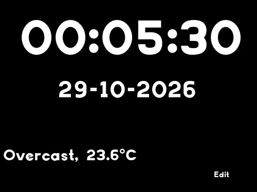

Weather Widget
Live conditions, temperature, wind speed and direction, pressure and humidity — refreshed every five minutes.
Widgets · 2024
Three desktop widgets — weather, a transparent clock, and both at once.

The story
Windows took its desktop gadgets away years ago. These bring them back: small, borderless, translucent windows that sit on the wallpaper and stay out of your way — each one draggable, and each one remembering where you left it.
There are three, each on its own branch of the repo: a Weather Widget that pulls live conditions from WeatherAPI, a transparent Clock Widget with a control panel to recolour, move and resize it, and MixWidget, which puts the time, the date and the weather on one panel with its own weather art.
The tour
Real screenshots, captured from the app itself. Click any to enlarge.
Everything it does
Live conditions, temperature, wind speed and direction, pressure and humidity — refreshed every five minutes.
A transparent clock with a control panel: recolour it, move it, resize it, add or remove it. Plus 24-hour and JavaFX versions.
Time, date and weather together, with its own illustrations for sun, cloud, rain, fog, snow, dust and storms.
Rounded, see-through panels with no window chrome.
Each widget remembers its position between launches.
The WeatherAPI key and city live in weather.properties beside the app — never in the code.
Architecture